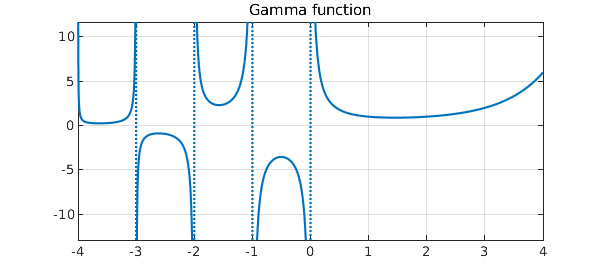
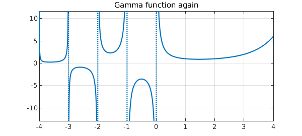
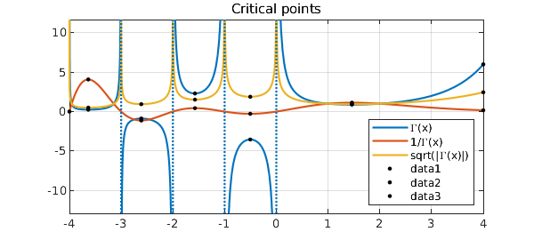

[revised June 2019 by Nick Trefethen]
This example displays some of Chebfun's capabilities for unbounded functions by exploring the gamma function $\Gamma(x)$ on the interval $[-4,4]$.
The gamma function has simple poles at the negative integers and zero. Chebfun can determine the locations and orders of these poles if it is called with the 'blowup' and 'splitting' flags on. The 'exponents' field of the output indicates that each pole is simple, that is, it has a singularity of type $x^{-1}$.
gam = chebfun('gamma(x)',[-4 4],'blowup','on','splitting','on')
plot(gam), grid on
title('Gamma function')
gam =
chebfun column (5 smooth pieces)
interval length endpoint values endpoint exponents
[ -4, -3] 20 Inf Inf [-1 -1]
[ -3, -2] 25 -Inf -Inf [-1 -1]
[ -2, -1] 24 Inf Inf [-1 -1]
[ -1,-2.2e-308] 20 -Inf -Inf [-1 -1]
[-2.2e-308, 4] 35 Inf 6 [-1 0]
vertical scale = Inf Total length = 124

Alternatively, and always a better idea when the information is available, one can instruct Chebfun what poles to put where:
gam = chebfun('gamma(x)',[-4 -3 -2 -1 0 4],'exps',[-1 -1 -1 -1 -1 0])
plot(gam), grid on
title('Gamma function again')
gam =
chebfun column (5 smooth pieces)
interval length endpoint values endpoint exponents
[ -4, -3] 20 Inf Inf [-1 -1]
[ -3, -2] 25 -Inf -Inf [-1 -1]
[ -2, -1] 24 Inf Inf [-1 -1]
[ -1, 0] 20 -Inf -Inf [-1 -1]
[ 0, 4] 35 Inf 6 [-1 0]
vertical scale = Inf Total length = 124

We can now treat $\Gamma(x)$ like any other chebfun. For example, we can:
(1) Find its reciprocal $1/\Gamma(x)$:
gam_i = 1/gam;
(2) Compute the square root $|\Gamma(x)|^{1/2}$:
absgam = abs(gam); sqrtgam = real(sqrt(absgam));
(3) Plot these functions:
plot([gam gam_i sqrtgam]), grid on
legend('\Gamma(x)', '1/\Gamma(x)', 'sqrt(|\Gamma(x)|)',...
'location','southeast')
title('Various related functions')

(4) Plot the critical points:
hold on
[y r] = minandmax(gam,'local');
[yi ri] = minandmax(gam_i,'local');
[ys rs] = minandmax(sqrtgam,'local');
plot(r,gam(r),'.k',ri,gam_i(ri),'.k', ...
rs,sqrtgam(rs),'.k','markersize',10), hold off
title('Critical points')

(5) Compute some integrals:
sum(gam) sum(absgam) sum(sqrtgam)
ans = NaN ans = Inf ans = 14.043323986892393
Do you understand why these results come out not-a-number, infinite, and finite?